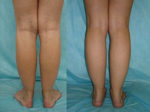

Laura Muñoz es una gimnasta famosa.
Laura Muñoz es una gimnasta famosa.
La campeona del mundo logró desahacerse de los problemas con las varices en una semana solamente. ¡El metodo profesional!
Es posible curar las varices, hasta si practicas el deporte, y hasta si sus piernas están tensas constantamente, lo sé según mi experiencia. - confirme Laura Muñoz.
Laura Muñoz es una gimnasta famosa.
Laura Muñoz es una gimnasta española joven y famosa, que mas de una vez se hizo la campeona mundial en el campeonato del mundo All-around. Laura estableció el récord, es la gumnasta más joven que obtuvo la medalla de oro en el campeonato del mundo All-around.
- ¡Laura, es tu récord, eres la gimnasta mas joven que obtuvo la medalla de oro en el campeonato del mundo All-around!!! Cuéntanos de tu trabajo.
- La gimnasia artística es el deporte femenino más bonito. Es un gran trabajo, desde luego, hay que entrenarse mucho, ya que es muy dificil realizar cualquier movimiento. No puedo permetirme regresar a casa sin practicar todos los movimientos, la realización de los que no gustó al entrenador. Me entreno 5-6 horas al día aproximadamente.
- Laura, te entrenas muchísimo. ¿Has tenido alguna vez los problemas de salud causados por tales cargas físicas?
- Claro que sí. Claro que cada ejercicio influye en la salud y el cuerpo. Dentro de medio año de los entrenamientos empecé a padecer las varices. ¡Mis piernas se veían horrible! ¡Es mejor no acordame de eso¡ ¡Mis venas estaban hinchadas y azules, sentía un dolor fuerte!
 Laura se dedica a la gimnasia desde la ninez (foto: archivo privado)
Laura se dedica a la gimnasia desde la ninez (foto: archivo privado)
 Y aquí podéis ver a qué llevó eso en aquel lapso de tiempo que estoy practicando la gimnasia (foto: archivo privado)
Y aquí podéis ver a qué llevó eso en aquel lapso de tiempo que estoy practicando la gimnasia (foto: archivo privado)
- ¡Puedo imaginarme cuanto deseabas deshacerte de eso!
- ¡Si, probé todo lo posible! Los tratamientos caros y terápias en el extranjero. Y claro que no pude evitar la medicina popular. Hasta consentí la operación, pero al final, después no podía practicar el deporte durante mucho tiempo.
- ¿Y qué éxistos lograste?
-No había éxitos ningunos. Primero parecía como si todo hubiera estado bien, como si hubiera logrado todo, ya que los síntomas que teanía desaparecieron, pero pronto regresaron. A veces hasta se hacía peor. Por desgracia, no sabía nada que hacer: no podía entrenarme ni mejorar la situación de ninguna manera:...
 Con Elóisa Marcos, colega y compañera de entrenamientos.
Con Elóisa Marcos, colega y compañera de entrenamientos.
- ¿Y qué dirás sobre la operación que te hicieron?
- Pués, como te digo. Eso fue el mejor método de los que probé. Pero es un buen método solamente si es gratis, si no para la gente común es muy caro. Y claro que es un gasto de tiempo, mucho tiempo no se puede entrenarse. Este método es muy caro, no es para todos. Y yo personalmente no puedo faltar a muchos entrenamientos y campeonatos. Asi se acabará en seguida toda mi carrera deportiva. ¡Probé una vez y basta! Y en general, la operación no solucióna el problema, simplemente atenua la enfermedad para un tiempo.
- Pués, mirando tus piernas, puedo adivinar que después de todo encontraste la sulución de tu problema...
- Si, mi colega y mejor amiga, mi rival, como la llaman, Elóisa Marcos me ayudó. Una vez durante el entrenamiento me dió una cajita y dijo: “¡Pasa un tratamiento con eso! Te necesitamos aquí, no en el hospital!”
 Los resultados después de la operación (la segunda foto), los resultados después después de la gel (la tercera foto).
Los resultados después de la operación (la segunda foto), los resultados después después de la gel (la tercera foto).
- ¿Eso bastó para curar las varices?!
- ¿Puedes creerlo?! La gel que me aconsejó ayudó de verdad!

- Pués, ¿y qué método es? ¡Cuentános tu secreto!
-¡Aquí no hay secreto ninguno! Eso fue una gel profesional para curar la venas , este producto de tecnología japonesa fue desarrolado junto con los científicos europeos. Se considera el método más seguro para curar las varices por su composición. La composición es completamente natural.
 Con la selección de gimnasia después de los ejercicios en el campeonato del mundo All-around.
Con la selección de gimnasia después de los ejercicios en el campeonato del mundo All-around.
- ¿De verdad te deshiciste de todos los problemas solamente gracias a la gel? ¿Cómo funciona?
- Te digo honestamente que utilizaba solamente ! (ride, ndr). Esta gel maravillosa lucha con el problema establemente, estabiliza la circulación de la sangre y quita la presión en las venas. ¡Me ayuda mucho después de los entrenamientos largos!
¡No sé todo sobre la fisiología, pero lo que me importa saber es lo que gracias a esa gel me deshice del problema! Pero si queréis, se puede averiguar más sobre este producto en , el sitio web del productor
- Laura, ¿cuánto tiempo se necesita para deshacerse de tal problema de las venas? ¿Cuantó tiempo hay que utilizarla para conseguir el resultado?
- Hay que utilizarla dos veces al día: por las mañanas y por las tardes antes de dormir.
¡No me creerás pero vi las mejorías en tres días ya! ¡Los hinchazones desparecieron y las piernas se veían muy bien! Después de entrenarme me sentía muy bien.
- ¿Es decir en tres días ya notaste las mejorías?
- Si. ¡En 2 días más note que ya fue dificil notar las venas en las piernas! ¡Ahora puedo trabajar de modelo tranquilamente!
- ¿Cuánto tiempo tuviste que gastar para curar tus piernas por completo?
- No calculé cuantos días, pero cerca de una semana. Y después, yo seguía utilizando la gel durante 3-4 días, porque tenía miedo de que los resultados desaparecieran
¡Pero me equivoqué! Las venas en las piernas dejaron de preocuparme. Olvidé de eso por completo y comencé una nueva vida! (Sonrie)
 Laura Muñoz
Laura Muñoz
- ¿Quieres desear algo a nuestras lectoras?
- Quisiera decir que no es solo una mezcla de diferentes sustancias, que componen esta gel maravillosa, cura todos los problemas, relacionados con las varices. Lo que compone la gel está creado por los científicos por medio de una una tecnología única y también las registran de la manera única. ¡Por eso tened cuidado, existen muchos productos falsos! Es muy importante comprar la gel que obtuvo todas las certificaciones: lo compro solamente en el sitio web oficial del productor. Es un producto efectivo, con garantía y no es falso el 100% .
Os deseo encontrar vuestro camino y vencer este problema terrible de las venas varicosas! ¡Todo estará bien, lo más importante es creer! ¡El mejor premio es sentirse bien. Qué bueno que es despertar de buen humor. ¡Y lo más importante es entender que lo haréis vosotras mismas, lo lograréis!
Espero que mi experiencia os ayude y dé fuerzas para vencer la enfermedad! ¡Deseo suerte a todas en la lucha contra las venas varicosas!
2020
Comentarios
¡Hola Laura, eres una chica muy buena y gumnasta talentosa! ¡Tu historia me motivó mucho! También tengo tales problemas con las venas en ambas piernas pero la derecha me preocupa más: duele desde la ingle hasta la rodilla, y por las noches se hace insoportable. Pero, a pesar de todo, no me inscribí en la consulta del médico todavía, quiero probar curarlo yo misma. Más tarde escribiré, contaré como va todo”.
¡Gracias, Laura! Ayer recibí mi envío. Todo está bien. Ahora empecé a utilizar. Espero ver los resultados durante 5 días ☺!
tenéis que usar los zapatos sin tacones, o con tacones pequeños. ¡Tales problemas con las venas suceden por usar tacones altos! No hacéis más que pensar en comprar los zapatos de moda y después se quejan de sus piernas temibles.
¡Hola Laura! Pedí la gel.
¡espero con impacienca recibir mi envío ya! :)
¡Mi hija trajo esta gel de Japon hace 5 años, no hay nada nuevo!
¡Guay! Ya hice el pedido y empecé a utilizarla. En un par de días contaré como van las cosas.
El producto no es nuevo, todos conocen esta gel. Hace 2 años mi mama solucionó sus problemas de las venas gracias a la gel.
¡En los Estados Unidos llevamos 5 años ya utilizando esta gel! ¡Las chicas en el trabajo parecen a las estrellas de Hollywood!
¡Buen día... llevo 3 días ya utilizando la gel y ni sé como expresar mi agradecimiento! ¡Gracias Laura!!! ¡Mis piernas están como nuevas!
¡Pasó solamente 4 días y ya veo el resultado! ¡Ahora mis piernas se ven más lindas! ¡Estoy muy feliz!
¡Compre la gel y la adoro! Pasó solamente una semana y todo está mucho mejor ya. Quien podría pensar... teniendo en cuenta su precio, es todo un regalo.
Laura, yo sabía de esta gel, ya que la compré en China hace mucho. Los problemas de las venas desaparecieron, ¿genial, no? ¡La recomiendo! ¡A todos!
Mi marido está admirado! Dice que tengo que participar en el concurso “Miss Piernas Hermosas”, jaja
funciona, hice el pedido en el sitio web oficial sin prepago, y el envío llegó durante 6 días. Las venas desparecieron en una semana.
¡No soy única! Me deshice del problema con las piernas en tan solo una semana. Hasta no puedo creer hasta ahora :-D
Las piernas no me duelen ahora y se ven muy bonitas!! ¡Super! ¡La recomiendo a las chicas!
la conozco también . Mi tía no se queja más de dolor de las piernas(-;
¡Hola! Esta gel es la mejor, tuve que esperar solamente una semana para deshacerme de la enfermedad.
¡Es una bomba! Mis piernas están sanas y hermosas ahora! Por cierto, el envío llegó en 3 días.
¡Buenos días señoras! Mi esposa compró esta gel y ahora sus piernas están ideales! ¡No logro expresar con palabras que feliz que estoy! ¡Recomiendo!
¡no hay nada nuevo! Cada mujer conoce esta gel: si alguien no conoce, simplemente no quiere deshacerse de la enfermedad.
¡Gracias por el artículo. Laura, eres la mejor! ¡Espero que tu carrera sea exitosa! Voy a pedir la gel.
¡Eso es lo que yo buscaba!¡Todos tendrán envidia!
¡En China todos usan esta gel y funciona perfectamente! Y somos últimos quienes nos damos cuenta de todo, como siempre, esperamos un siglo para recibir el producto...